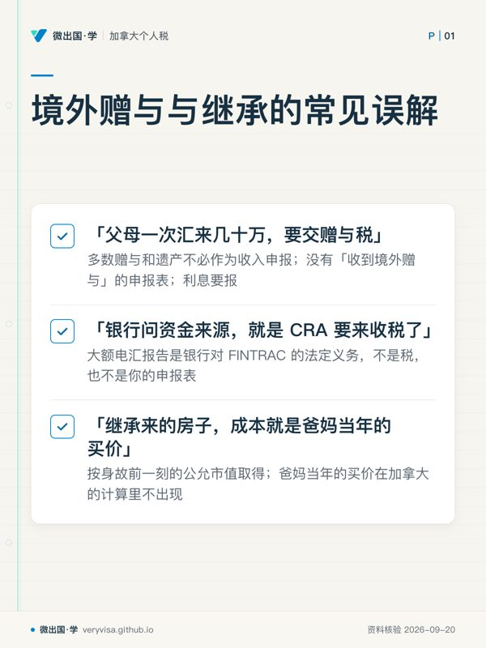
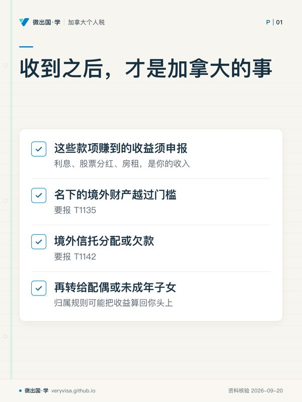

核实日期：2026-09-13｜现行口径：2026 税年（2027 年春季申报）｜联邦法条以 Justice Laws 2026-06-21 快照为准，罚则条文另与 2024-12-31、2025-12-31 快照逐句比对；CRA 与 FINTRAC 页面以各页页脚日期为准。 本页只讲加拿大这一侧。国内的赠与、继承、公证、过户、汇出在中国一侧要交什么税、办什么手续，一律不下结论——中方规定需另核中国官方原文。个案请回 CRA 原文，并咨询持牌专业人士。
父母在国内，孩子在加拿大，钱迟早要从一边走到另一边：首付款、学费、一笔「先放你名下」的存款，或者某一天，一套要过户到你名下的国内房子。论坛上最常见的两种担心正好相反：一种是「一次汇过来这么多，是不是要交赠与税」，另一种是「反正不交税，那就什么都不用管」。这一讲把两种担心都拆开：加拿大不征赠与税和遗产税，但钱和房子到了你名下之后，有三件事要自己盯住。
学完你能做到
- 判断一笔从国内来的钱是赠与、借款、遗产分配还是境外信托分配，并说出每一种在 T1 上报不报。
- 算出受赠或继承的国内房产、存款在加拿大的成本基础，为日后出售留好起点。
- 判断收到之后要不要报 T1135、要不要报 T1142，知道 T1142 的截止日、交法和罚则。
- 分清银行向 FINTRAC 的大额汇款报告和你自己的报税义务。
- 判断父母把钱放在孩子或孙辈名下时，利息归谁报；什么情形要转去看裸信托规则。
常见误解
- 很多人以为「父母一次汇来几十万，要交赠与税，或者至少要单独报一张表」。实际上，CRA 明确说多数赠与和遗产不必作为收入申报；加拿大所得税法层面没有一张「收到境外赠与」的申报表。但钱产生的利息要报，钱如果留在国内你名下的账户里，还可能碰到 T1135。
- 很多人以为「银行问资金来源、说要报告，就是 CRA 要来收税了」。实际上，大额电汇报告是银行对 FINTRAC 的法定义务，不是税，也不是你的申报表。FINTRAC 在有合理理由怀疑与洗钱等调查相关时，才向执法与情报机构披露，接收方名单里包括 CRA。
- 很多人以为「继承来的房子，成本就是爸妈当年的买价」。实际上，加拿大税法让继承人按身故前一刻的公允市值取得，受赠人按收到时的公允市值取得。爸妈当年的买价在加拿大的计算里不出现。
- 很多人以为「国内的遗产还没分完，每年收到钱都得报 T1142」。实际上，境外遗产在管理期间的分配不用报 T1142；遗产管理完、变成持续存在的境外遗嘱信托之后，收到分配的年度才要报。
- 很多人以为「钱存在孩子名下，利息就算孩子的」。实际上，这要看是谁把钱给了孩子。国内父母直接给在加拿大的成年子女，归属规则不适用；但在加拿大的你把钱再转给自己未满 18 岁的孩子，利息归你报。
一、制度设计与底层逻辑：加拿大在「给出」那一端征，在「收到」之后管
1.1 为什么没有赠与税，却也不是完全不管
加拿大处理财产转移的办法，不是另设一个赠与税或遗产税，而是把转移时的增值放进给出方的所得税里：
- 活着时赠与：ITA s.69(1)(b)(ii) 规定，以赠与方式处置财产的，视同按公允市值取得处置所得。给出方就这一刻的增值计算利得。
- 身故时：ITA s.70(5)(a) 规定，逝者在身故前一刻视同按公允市值处置全部资本财产。
与之对称，接收方按同一个市值拿成本：s.69(1)(c) 规定以赠与、遗赠或继承取得财产的，视同按公允市值取得；s.70(5)(b) 规定因身故取得的财产，成本为身故前一刻的公允市值。
对国内父母而言，他们不是加拿大居民，国内的房子和存款也不是应税加拿大财产，这一刻的视同处置在加拿大不产生税款。这正是「加拿大不收」的来源。但同一条规则也给你定了成本：你拿到的是一个按市值重置过的起点，不是父母当年的买价。
1.2 收到之后，才是加拿大的事
收到本身不计税，收到之后发生的事照常进入加拿大税制：
- 钱存起来生的利息、买股票分的红、房子租出去收的租金，是你的收入（CRA 不计税款项页原话：这些款项赚到的收益须申报）；
- 名下的境外财产越过门槛，要报 T1135；
- 从境外信托收到分配、或欠境外信托钱，要报 T1142；
- 把钱再转给配偶或未成年子女，归属规则可能把收益算回你头上。
1.3 谁与谁在博弈
CRA 看不见你在国内名下有什么，也看不见一笔境外信托给你分了什么。两张信息申报表就是为补这个盲区设的：T1135 让 CRA 知道你名下有哪些境外财产，T1142 让 CRA 知道你从哪个境外信托收过钱、欠过钱。它们的罚则独立于税款：哪怕一分钱税都不欠，迟报照样罚。
FINTRAC 是另一条线。它盯的是资金流动中的洗钱与恐怖融资风险，报告义务在银行等机构，不在你。两条线偶尔在 CRA 那里交汇，但不能互相替代：银行报了 FINTRAC，不等于你报了 T1135。
1.4 错了会怎样
- 把赠与当收入报：多缴税，需要改正申报。
- 漏报赠来的钱生的利息：漏报收入，补税计息。
- 继承房按父母买价算成本：日后卖房时利得算大，多缴税。
- 漏报 T1135：罚则见 ca-residency-04-t1135-foreign-property。
- 漏报 T1142：按天计罚，见 2.4。
二、2026 税年现行规则与数字
2.1 从国内来的钱，先定性

| 钱的性质 | 收到本身计不计收入 | 你的成本基础 | 可能涉及的申报 | 在哪讲 |
|---|---|---|---|---|
| 父母生前赠与（现金或财产） | 多数不计（CRA 不计税款项页） | 收到时公允市值（s.69(1)(c)） | 留在境外的：T1135；转给配偶或未成年子女后：归属规则 | 本讲 2.2、2.3、2.5 |
| 父母借给你的钱 | 借款本金不是收入 | 不适用 | 你若向境外父母付利息，付款一侧涉及非居民预扣 | ca-residency-07-part-xiii-withholding-nr4-nr301 |
| 境外遗产管理期间分给你的财产 | 多数不计 | 一般为身故前一刻公允市值（s.70(5)(b)、T4037） | 管理期间不报 T1142；到你名下后看 T1135 | 本讲 2.2–2.4 |
| 境外信托分给你的钱或财产 | 按加拿大税法判断属收入分配还是资本分配，本讲不展开课税规则 | 视分配性质而定 | T1142 | 本讲 2.4 |
定性要靠文件，不靠口头。赠与和借款的区别、遗产分配和信托分配的区别，在加拿大一侧后果完全不同，所以国内的赠与协议、遗嘱或继承公证、借款合同、信托文件，要和汇款记录放在一起保存。这些文件在中国一侧怎么办理，需另核中国官方原文。
2.2 受赠与继承财产的成本基础
三句法条和两句 CRA 口径，决定了你手里财产在加拿大的起点：
- ITA s.69(1)(c)：以赠与、遗赠或继承取得的财产，视同按公允市值取得。
- ITA s.70(5)(b)：因他人身故取得的财产，视同在身故时按身故前一刻的公允市值取得。
- CRA T4037：受赠财产一般按收到当日的公允市值取得；继承财产的成本一般等于逝者的视同处置所得，通常是身故前一刻的公允市值，配偶继承等情形另有规则。
- CRA T1135 问答：以赠与、遗赠或继承取得的境外财产，T1135 的成本额是收到时的公允市值。
- 折算：人民币市值按取得当日的加拿大央行汇率折成加元（ITA s.261(2)(b)；S5-F4-C1 ¶1.4）。
注意两个时点。继承的房产，所得税法把成本锁在身故前一刻，CRA 的 T1135 问答写的是「收到时」。遗产管理可能拖上一两年，两个时点的市值与汇率可能不同。本讲不替你在两者之间选：算日后卖房的利得，回 s.70(5)(b)；判 T1135 门槛，照 CRA 问答；两个口径都明显高于或低于 $100,000 时，不影响结论；接近门槛时，回 CRA 确认。
配偶之间的滚转（ITA s.70(6)）要求逝者身故前一刻是加拿大居民、承继的配偶也是加拿大居民。国内父母的遗产不满足这一条，本讲不展开。
🔧
过户到你名下那一刻，就该存进文件夹的东西
身故日期证明；遗嘱或继承公证文件；身故前后同一地区的可比成交或书面估价；过户日期记录；身故日与过户日两天的加拿大央行人民币汇率记录。CRA 在 T1142 填表说明里列过估计房地产市值应保留的材料（位置、面积、建造年份、取得成本与日期、改良支出、市政评估值、保险金额、同一地区相近日期的可比成交），可以直接当清单用。
2.3 T1135：钱没进加拿大，也可能要报
赠与本身不报，但赠来的财产如果留在境外、记在你名下，就是 T1135 要看的东西。
- 什么算：ITA s.233.3(1)「指定境外财产」包括在加拿大以外存放或持有的资金、位于加拿大以外的有形财产、非居民公司股份等。国内你名下的存款、出租的房子都在内。
- 什么不算：自用财产（(p) 项），即主要供你本人或与你有关联关系的人个人使用的财产。与你有血缘关系的父母、子女、兄弟姐妹都属于关联人（ITA s.251(6)(a)）。另外，(m) 项把「不是有偿取得的境外信托权益」排除在外，所以你作为受益人对境外信托的权益本身，一般不进 T1135，而是走 T1142。
- 门槛：年内任何时候名下指定境外财产成本额合计超过 $100,000。
- 首年：首次成为加拿大居民的年度，个人免报（ITA s.233.7）。
- 成本额：赠与或继承取得的，按 CRA 问答为收到时公允市值。
Part A 与 Part B 怎么选、罚则怎么叠、补报走什么程序，全部在 ca-residency-04-t1135-foreign-property。
2.4 T1142：从境外信托收到分配或借了钱
法源。T1142 的法源是 ITA s.233.6。第 233.5 条是 T1141、T1134 两种申报的尽职调查例外，与 T1142 无关，引用时不要写错。
谁要报。s.233.6(1)：加拿大指定实体（加拿大居民个人、公司、信托，以及符合条件的合伙）在年内任何时候受益于一个非居民信托，并且在该年从它收到分配，或者对它负有债务，就要报。CRA「About Form T1142」页与 T1142 表说明一致。
不用报的情形：
- 因个人身故而产生的境外遗产，在管理期间分配给你的财产，不报。遗产管理完毕后，如果变成持续存在的境外遗嘱信托，加拿大受益人在收到分配或对其负债的年度要报（About Form T1142）。
- 除外信托：受外国退休安排管辖的信托，以及同时满足四项条件（设在征收所得税的国家、在当地免税、主要提供养老退休或雇员福利、主要为非居民个人设立或受雇员分红计划管辖）的非居民信托。
- 同一信托同一年你已经要报 T1134、T1135 或 T1141 的，不再报 T1142。
- 首次成为加拿大居民的年度，个人免报。
报什么。2025 及以后税年用新版 T1142：每个境外信托一张附表；Section A 识别信托、设立人、受托人；Section B 列出收到的资金与非资金财产，逐项勾选按加拿大税法属于收入分配还是资本分配，非资金财产报收到时的估计公允市值（不要求正式评估）；Section C 列出对信托的债务；Section D 附上信托文件、协议、往来函件、借款合同等支持文件。折算按交易日汇率，年末余额用年末汇率，年内多次分配的可用年均汇率。
什么时候、怎么交。截止日是你当年所得税申报表的到期日；不需要报所得税的，也在假如需要报时的到期日前交。T1142 不能电子申报，即使你的 T1 是电子报的，也要另外寄纸质件。
罚则（CRA 境外申报罚则页）：
- 迟报：每天 $25，最多 100 天，最低 $100、最高 $2,500，适用于 T1142；
- 明知或重大过失不报的每月 $500、超过 24 个月的 5% 附加，不适用于 T1142；
- 收到 CRA 催告后仍明知或重大过失不交：每月 $1,000，最多 24 个月（最高 $24,000），适用于 T1142；
- 明知或重大过失作虚假陈述或遗漏：$2,500 与「所涉分配财产公允市值或债务金额的 5%」两者取高。
境外信托本身怎么课税，包括分配给你的收入部分如何计入、什么情况下境外信托会被视同加拿大居民，另有专讲，本讲不展开。
2.5 归属规则的边界，以及裸信托只点到
归属规则（attribution rules）处理的是「把钱转给家人，让收益算在低税率的人头上」。ITA s.74.1 有两条主线：
- 74.1(1)：转给或借给配偶、同居伴侣的财产所生的收入，归属转移人；
- 74.1(2)：转给或借给未满 18 岁、且与转移人非公平交易（或为其侄甥辈）的人的财产所生的收入，归属转移人，直到对方年满 18 岁。
两条都只就「转移人是加拿大居民」的期间归属。与之配套的 ITA s.56(4.1) 管非公平交易个人之间、以避税为主要目的的借款，同样只就「出借人是加拿大居民」的期间，把收益归属出借人。
落到中国家庭，边界是这样的：
- 国内父母直接给在加拿大的成年子女钱：子女已满 18 岁，74.1(2) 本就不适用；父母不是加拿大居民，也没有居民期间可归属。子女用这笔钱赚的利息，由子女自己报。
- 国内祖父母直接给在加拿大的未成年孙辈钱：条文只就转移人居住在加拿大的期间归属，按文字不归属；但钱如果实际是先给了在加拿大的父母、再由父母转到孩子名下，转移人就是在加拿大的父母。
- 在加拿大的你，把收到的钱转给自己的配偶或未满 18 岁的孩子：你是转移人，你是居民，收益归属你。
父母以自己的名义在加拿大替子女持有资产（例如父母名下的加拿大账户或房产，实际是子女的钱），加拿大税法可能把它当作代持信托（bare trust）。年结在 2026-12-31 及以后的应申报代持信托须报 T3 和 Schedule 15，三层判断在 ca-estate-02-estate-t3-trust-reporting 第 2.3 节。父母若是非居民，他们名下加拿大账户的利息等还涉及非居民预扣（ca-residency-07）。
2.6 FINTRAC 大额汇款报告：不是税
FINTRAC（加拿大金融交易和报告分析中心）官网「向 FINTRAC 报告的金融交易」页列明：
- 电汇报告：报告实体发送或接收单笔、或 24 小时内多笔合计 $10,000 加元及以上的电汇，5 个工作日内报告；
- 大额现金报告：报告实体收到 $10,000 及以上现金（单笔或 24 小时内多笔），15 个日历日内报告；
- 跨境现金：个人携带或邮寄 $10,000 及以上现金或票据出入境，向加拿大边境服务局申报，再由其转交 FINTRAC。
FINTRAC 的电汇指引写明，报告义务落在发起或最终接收国际电汇的金融实体身上。FINTRAC 在有合理理由怀疑信息与洗钱、恐怖融资等调查相关时，才向执法与情报机构披露，其「关于我们」页列出的接收方包括 CRA。
所以：银行问你资金来源、说要报告，是银行在履行它的义务；它不产生税款，也不替你完成 T1 或 T1135。反过来，把一笔钱拆成几笔来避开这个数字，24 小时合计规则本来就会把它们加在一起。
2.7 三列表：本讲的法定数字
| 项目 | 2024 税年 | 2025 税年 | 2026 税年现行 | 状态与出处 |
|---|---|---|---|---|
| T1135 门槛（指定境外财产成本额合计） | 超过 $100,000 | 同左 | 同左 | 已生效·ITA s.233.3(1)，三个法条快照同句 |
| T1142 迟报罚款 | 每天 $25，最多 100 天，最低 $100 | 同左 | 同左（即最高 $2,500） | 已生效·ITA s.162(7)，三个快照同句；CRA 罚则页确认适用 T1142 |
| T1142 虚假陈述或遗漏（明知或重大过失） | $2,500 与 5% 取高 | 同左 | 同左 | 已生效·ITA s.163(2.4)(e)，三个快照同句 |
| T1142 境外遗产管理期间分配 | 不报 | 同左 | 同左 | 已生效·ITA s.233.6(1)，三个快照同句；About Form T1142 |
FINTRAC 的 $10,000 报告线不是税法数字，本表不列；现行口径以 FINTRAC 页为准（页脚 2025-08-06）。
三、实务流程
3.1 钱或财产到你名下之前
- 先定性：赠与、借款、遗产分配还是信托分配，拿到对应的书面文件。
- 确认你在加拿大的居民身份与首次成为居民的年份（关系到 T1135、T1142 首年豁免）。
- 如果是房产或股票，准备取得日的公允市值依据和汇率记录。
3.2 收到的那一年
- T1 上不报赠与或遗产本身。
- 这笔钱或财产此后产生的利息、股息、租金，照常报。
- 判断 T1135：钱或财产留在境外、在你名下、不是自用财产，加上你名下其他指定境外财产，年内任何时候成本额合计是否超过门槛。
- 判断 T1142：来源是不是非居民信托（遗产管理期间的分配除外）；是，就在所得税申报到期日前寄纸质件。
- 把钱转给配偶或未成年子女的，按 2.5 判断归属。
3.3 继承国内房产之后的三条路
- 自己或亲属住：属于自用财产，不进 T1135；日后卖出，成本从 s.70(5)(b) 的市值起算，按 ca-foreign-02 的流程算利得；亏损通常不能扣。
- 租出去：租金按出租收入报，房产进 T1135 门槛计算，中国对租金征的所得税性质税款可按 ca-foreign-02 第 2.5 节抵免。
- 卖掉：按 ca-foreign-02 第 3.3 节，成本是身故前一刻市值（按那天的汇率折算），售价按出售日汇率。
3.4 CRA 会怎么核
- T1142 表每一节都会问你有没有支持文件，并要求在 Section D 附上。
- T1135 上报的境外财产，与 T1 上报的境外收入互相对照。
- 继承房产日后出售时，CRA 看的是身故前一刻的市值依据，而不是父母的买价。
四、联邦之外
BC 这一侧。BC 没有与 T1135、T1142 对应的省级境外申报表。BC 的遗嘱认证费（probate fee）针对的是在 BC 办理的遗产，与国内父母的遗产不是一回事，BC 遗产的规则在 ca-estate-04。收到境外赠与或遗产，本身不触发 BC 省所得税。
中国那一侧。国内的赠与、继承是否征税，房产过户涉及哪些税费，继承公证、银行账户继承与资金汇出需要哪些手续和额度，都属于中国法律与外汇管理的范围，需另核中国官方原文，由具有中国执业资格的专业人士判断。
如果给钱的一方或收钱的一方是美国税务身份的人，美方另有针对外国赠与与外国信托的申报规则，与加拿大的规则互不替代，见本库美国跨境板块。
五、历史变革
- 2025 税年起：T1142 换新版。CRA 在「About Form T1142」页说明，Section A 增收信托与设立人的更多信息，增加了信托管理方面的问题，各节新增「是否有支持文件」一问，新设 Section D 要求附上支持文件。用旧版交过 2025 税年表的不必重交，此后新交的一律用新版。
- 2023 至 2025 税年：代持信托的增强申报被逐年免除；年结在 2026-12-31 及以后的应申报代持信托须报 T3 与 Schedule 15（ca-estate-02 第五节）。父母在加拿大替子女代持资产的家庭，2026 税年是第一个真正要判断的年份。
- 2017 年 3 月 1 日：CRA 可接受的汇率基准从加拿大央行中午汇率改为央行当日汇率（S5-F4-C1 ¶1.4）。旧资料上写的「中午汇率」是那之前的口径。
六、案例与随堂练
以下人物、日期、金额、汇率均为示例，不代表当年实际汇率，也不代表中国一侧的实际规定。
案例一：列治文的韩女士，母亲汇来首付款
情景。韩女士 2019 年起是加拿大居民，住在列治文。2026 年 2 月，母亲从国内汇给她 RMB 1,560,000，示例汇率 1 加元兑 5.20 元人民币，折合 $300,000，母女签了书面赠与协议。房子 9 月交房，她先把其中 $180,000 存了一张 GIC，到期利息 $2,340。另外，母亲还把 RMB 700,000 转进了国内一个韩女士本人名下的账户，给她回国时用，收到当日示例汇率 5.20，折合约 $134,615。
适用规则与算出的数。
- $300,000 本身：赠与，不计收入，不报。
- 银行在接收这笔电汇时，按 FINTRAC 规则可能报告。那是银行的义务，不是韩女士的税。
- GIC 利息 $2,340：韩女士自己的投资收入，照常报。母亲不是加拿大居民，归属规则不涉及。
- 国内账户 RMB 700,000：在加拿大境外存放的资金，是指定境外财产；按收到时公允市值，成本额约 $134,615，超过 $100,000。韩女士不是首年居民，2026 税年要报 T1135。
常见错报。把 $300,000 当收入报进 T1；或者只盯着汇到加拿大的钱，忘了国内账户那一笔。
随堂练 1：韩女士从这笔钱里拿出 $50,000，存进 12 岁儿子名下的 GIC，一年利息 $1,650。这 $1,650 由谁报？（答案见页末）
案例二：本拿比的邓先生，继承国内一套房
情景。邓先生 2014 年起是加拿大居民，住在本拿比。父亲 2025-11-06 在国内去世，遗产 2026-04-15 办完，一套住房过户到邓先生名下。身故前一刻示例市值 RMB 3,120,000，身故日示例汇率 5.20，折合 $600,000；过户日示例汇率 5.15，示例假设市值不变，折合 $605,825。2026 年 6 月起，这套房租给与邓家无亲属关系的人，每月 RMB 7,800，年内 7 个月共 RMB 54,600，示例年均汇率 5.25，折合 $10,400。
适用规则与算出的数。
- 继承本身：不计收入。父亲是非居民，这套房不是应税加拿大财产，他的视同处置在加拿大不产生税款。
- 成本基础（算日后卖房的利得用）：身故前一刻市值，按身故日汇率折算为 $600,000（s.70(5)(b)）。
- T1142：这是境外遗产在管理期间的分配，不报。
- T1135：房子出租，不是自用财产，是指定境外财产。按 CRA 问答的「收到时公允市值」，成本额约 $605,825；按身故前一刻口径是 $600,000。两个口径都远超 $100,000，2026 税年要报。
- 租金 $10,400：按出租收入报净额；国内对租金征收的所得税性质税款，按 ca-foreign-02 第 2.5 节抵免。
常见错报。按父亲 2005 年的买价当成本；或者以为「遗产的事」要报 T1142。
随堂练 2：换一种安排：邓先生没有出租，这套房一直由他在国内的母亲免费居住。2026 税年这套房要不要计入 T1135 门槛？（答案见页末）
案例三：温哥华的苏女士，收到境外信托的分配
情景。苏女士是温哥华居民。她的外祖父生前在境外设立了一个信托，苏女士是受益人之一，这份受益权不是她花钱买的。2026 年 9 月，信托分给她 RMB 416,000，按收到日示例汇率 5.20 折合 $80,000。
适用规则与算出的数。
- T1135：她对这个境外信托的权益不是有偿取得的，按 s.233.3(1)(m) 不算指定境外财产，不因此报 T1135。
- T1142：她在年内受益于一个非居民信托，并收到了分配，按 s.233.6(1) 要报。截止日是她 2026 税年所得税申报表的到期日，只能寄纸质件，附上信托文件等支持材料。Section B 要逐项勾选这笔分配按加拿大税法属于收入还是资本。
- 这笔分配在 T1 上怎么计税，取决于它的性质和信托的具体情况，本讲不展开，个案回原文与持牌专业人士。
- 如果她晚交 150 天：迟报罚款每天 $25、最多 100 天，即 $2,500。
随堂练 3：同一年，苏女士还从这个信托借了 RMB 104,000（折合 $20,000），年底尚未归还。假设信托这一年没有给她任何分配，她还要报 T1142 吗？（答案见页末）
七、常见错报与自查清单
- 把父母的赠与报成收入。识别方法：有没有书面文件证明是无偿给予？是赠与，就不计入 T1。
- 以为钱没进加拿大就与自己无关。识别方法：国内那个账户、那套房是不是在你名下？在你名下又不是自用，就进 T1135 门槛计算。
- 继承的房子按父母买价当成本。识别方法：成本记录上的日期是不是早于身故日？应当换成身故前一刻的市值。
- 境外遗产管理期间的分配报了 T1142，或者遗产管理完后的信托分配漏报。识别方法：给你钱的那一方，是还在管理中的遗产，还是已经管理完、持续存在的信托？
- T1142 跟着 T1 一起电子提交就以为交了。识别方法：T1142 不能电子申报，必须另寄纸质件。
- 以为银行向 FINTRAC 报告就等于自己报过了。识别方法：FINTRAC 报告是银行的，T1135、T1142 是你的，两件事互不替代。
- 把赠来的钱转到未成年孩子名下，利息让孩子报。识别方法：转钱的人是不是你、你是不是加拿大居民、孩子是否未满 18 岁？三者都是，利息归属你。
- 父母用自己的名义在加拿大替你持有房产或账户，从没想过申报。识别方法：法定所有人是不是只是替你拿着名字？是，就按 ca-estate-02 的三层判断走一遍 2026 税年代持信托申报。
- 把首年居民豁免记成「前几年都免」。识别方法：s.233.7 只给首次成为居民的那一年。
本板块的配套练习与模考题：38
本讲小结
- 加拿大不征赠与税和遗产税，增值在给出方那一端按视同处置处理；国内父母的国内财产，在加拿大通常不产生这笔税。
- 受赠按收到时公允市值、继承一般按身故前一刻公允市值拿成本，父母的买价不再出现。
- 收到本身不报，但收益要报，名下境外财产超过门槛要报 T1135。
- 从境外信托收到分配或借钱要报 T1142（法源 s.233.6），遗产管理期间的分配不报，只能纸质，迟报每天 $25。
- 银行的 FINTRAC 报告不是税；把钱再转给配偶或未成年子女，归属规则可能把收益算回你头上。
术语双语表
| English | 中文 | 一句机制 |
|---|---|---|
| gift | 赠与 | 无偿给予；受赠人按收到时公允市值取得（s.69(1)(c)） |
| inheritance / bequest | 继承／遗赠 | 继承人一般按身故前一刻公允市值取得（s.70(5)(b)） |
| deemed disposition on death (s.70(5)(a)) | 身故视同处置 | 逝者身故前一刻按市值视同处置全部资本财产 |
| fair market value (FMV) | 公允市值 | 受赠、继承取得的成本与 T1135 成本额的依据 |
| cost amount | 成本额 | T1135 门槛按成本额而非市值判断 |
| specified foreign property (s.233.3) | 指定境外财产 | 境外资金、境外有形财产等，自用财产除外 |
| personal-use property | 自用财产 | 主要供本人或关联人个人使用，不进 T1135 |
| related persons (s.251(6)) | 关联人 | 血缘关系包括父母子女、兄弟姐妹 |
| Form T1135, Foreign Income Verification Statement | 境外收入核实表 | 成本额年内任何时候超过门槛即须申报 |
| non-resident trust | 非居民信托 | 在加拿大以外居住的信托 |
| Form T1142 | 境外信托分配与负债申报表 | 受益于非居民信托并收到分配或负债时申报（s.233.6） |
| excluded trust | 除外信托 | 境外退休安排等，分配不必报 T1142 |
| estate during administration | 管理期间的遗产 | 其分配不必报 T1142 |
| testamentary trust | 遗嘱信托 | 遗产管理完后持续存在的，分配要报 T1142 |
| first-year resident exception (s.233.7) | 首年居民豁免 | 首次成为居民的年度个人免报 T1135、T1142 等 |
| due diligence exception (s.233.5) | 尽职调查例外 | 适用于 T1141、T1134 申报，不是 T1142 的法源 |
| attribution rules (s.74.1) | 归属规则 | 转给配偶或未成年人的财产收益，在转移人居民期间归属转移人 |
| non-arm's length loan (s.56(4.1)) | 非公平交易借款 | 以避税为主要目的的家庭借款，收益可归属出借人 |
| bare trust | 代持信托 | 法定所有人只替实际所有人持有名字；2026-12-31 起年结须判断申报 |
| FINTRAC | 加拿大金融交易和报告分析中心 | 金融情报机构，接收大额电汇与现金报告，不评税 |
| Electronic Funds Transfer Report | 电汇报告 | 金融机构对 $10,000 及以上国际电汇的报告义务 |
出处
- CRA：不需申报或不计税的款项（含多数赠与与遗产）https://www.canada.ca/en/revenue-agency/services/tax/individuals/topics/about-your-tax-return/tax-return/completing-a-tax-return/personal-income/amounts-that-taxed.html
- 加拿大司法部：所得税法第 69 条（赠与、继承按公允市值）https://laws-lois.justice.gc.ca/eng/acts/I-3.3/section-69.html
- 加拿大司法部：所得税法第 70 条（身故视同处置与继承人成本）https://laws-lois.justice.gc.ca/eng/acts/I-3.3/section-70.html
- 加拿大司法部：所得税法第 74.1 条（归属规则）https://laws-lois.justice.gc.ca/eng/acts/I-3.3/section-74.1.html
- 加拿大司法部：所得税法第 56 条（含 56(4.1) 非公平交易借款）https://laws-lois.justice.gc.ca/eng/acts/I-3.3/section-56.html
- 加拿大司法部：所得税法第 233.3 条（T1135 与指定境外财产）https://laws-lois.justice.gc.ca/eng/acts/I-3.3/section-233.3.html
- 加拿大司法部：所得税法第 233.5 条（尽职调查例外）https://laws-lois.justice.gc.ca/eng/acts/I-3.3/section-233.5.html
- 加拿大司法部：所得税法第 233.6 条（T1142 法源）https://laws-lois.justice.gc.ca/eng/acts/I-3.3/section-233.6.html
- 加拿大司法部：所得税法第 233.7 条（首年居民豁免）https://laws-lois.justice.gc.ca/eng/acts/I-3.3/section-233.7.html
- 加拿大司法部：所得税法第 162 条（迟报信息申报表罚则）https://laws-lois.justice.gc.ca/eng/acts/I-3.3/section-162.html
- 加拿大司法部：所得税法第 163 条（虚假陈述罚则）https://laws-lois.justice.gc.ca/eng/acts/I-3.3/section-163.html
- CRA：T4037 资本利得指南（受赠与继承财产的成本）https://www.canada.ca/en/revenue-agency/services/forms-publications/publications/t4037/capital-gains.html
- CRA：T1135 问答 https://www.canada.ca/en/revenue-agency/services/tax/international-non-residents/information-been-moved/foreign-reporting/questions-answers-about-form-t1135.html
- CRA：T1142 表 https://www.canada.ca/en/revenue-agency/services/forms-publications/forms/t1142.html
- CRA：关于 T1142 表 https://www.canada.ca/en/revenue-agency/services/tax/international-non-residents/information-been-moved/foreign-reporting/about-form-t1142.html
- CRA：境外申报罚则 https://www.canada.ca/en/revenue-agency/services/tax/international-non-residents/information-been-moved/foreign-reporting/penalties.html
- CRA：所得税解释文件 S5-F4-C1 申报货币与汇率 https://www.canada.ca/en/revenue-agency/services/tax/technical-information/income-tax/income-tax-folios-index/series-5-international-residency/series-5-international-residency-folio-4-foreign-currency/income-tax-folio-s5-f4-c1-income-tax-reporting-currency.html
- CRA：信托申报新规与代持信托 https://www.canada.ca/en/revenue-agency/services/tax/trust-administrators/t3-return/new-trust-reporting-requirements-t3-filed-tax-years-ending-december-2023.html
- FINTRAC：向 FINTRAC 报告的金融交易 https://fintrac-canafe.canada.ca/individuals-individus/rpt-eng
- FINTRAC：电汇报告指引 https://fintrac-canafe.canada.ca/guidance-directives/transaction-operation/eft-dt/eft-dt-eng
- FINTRAC：关于我们 https://fintrac-canafe.canada.ca/fintrac-canafe/1-eng
随堂练答案
随堂练 1。由韩女士报。她把钱转给了 12 岁的儿子，儿子未满 18 岁、与她非公平交易，她是加拿大居民，按 ITA s.74.1(2)，这笔 GIC 的利息 $1,650 归属韩女士，直到儿子年满 18 岁那一年。钱最初来自国内的外婆，并不改变「这一次转移是韩女士做的」这个事实。
随堂练 2。不计入。母亲与邓先生有血缘关系，属于关联人（ITA s.251(6)(a)）；这套房主要供母亲个人居住使用，属于自用财产，按 s.233.3(1)(p) 不是指定境外财产。但邓先生名下其他境外资金和出租物业仍要另算。日后卖房时，成本仍按身故前一刻的市值 $600,000 起算；自用财产的亏损通常不能扣。
随堂练 3。要报。s.233.6(1) 的触发条件是「收到分配」或「对该信托负有债务」，两者有其一即可。她年内受益于该非居民信托，又对它负有 $20,000 的债务，要在 2026 税年所得税申报到期日前寄交 T1142，在 Section C 列出借款日期、利率、原始本金、年末未还本金与利息，并附上借款合同。
本页知识卡
不看正文也能拿到这一节的核心内容：先看导读，再看图。点图放大，左右翻页。
- 先看先读两列再横看两行：同一次转移，在两端承担的税务作用不同。
- 易漏图中前提只对应国内父母及国内房子、存款；换成应税加拿大财产要另判。
- 下一步去练习分别判断给出方与接收方，再带资产所在地找持牌专业人士。

- 先看先区分收到款项、银行报告和房屋成本，这三件事走的是不同判断。
- 易漏资金来源审查与税务申报是两件事；房屋成本也不是沿用父母历史买价。
- 下一步去知识卡核对后续申报，再带资金来源和成本资料找持牌专业人士。

- 先看先看四类后续事件：收益、境外财产、信托、家庭再转。
- 易漏境外遗产在管理期间的分配不用报 T1142；遗产管理完变成持续存在的境外遗嘱信托之后才另看。
- 下一步去练习把每项事件对应到申报动作，疑难信托安排找持牌专业人士。